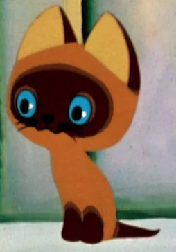
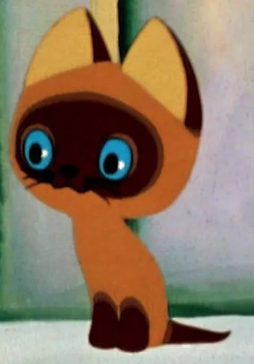
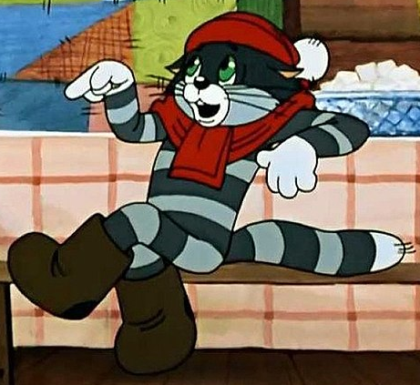
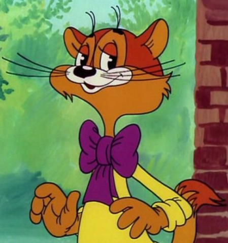
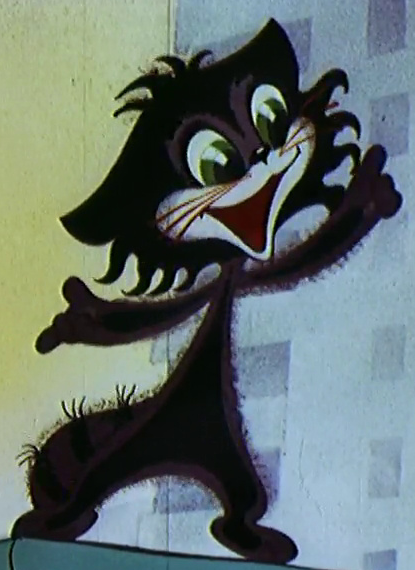
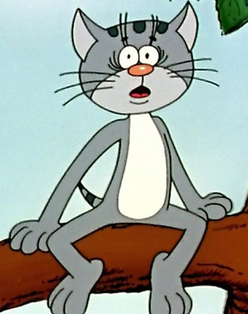
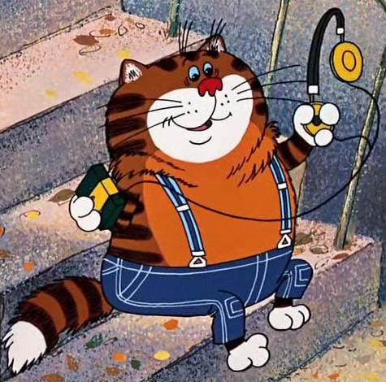
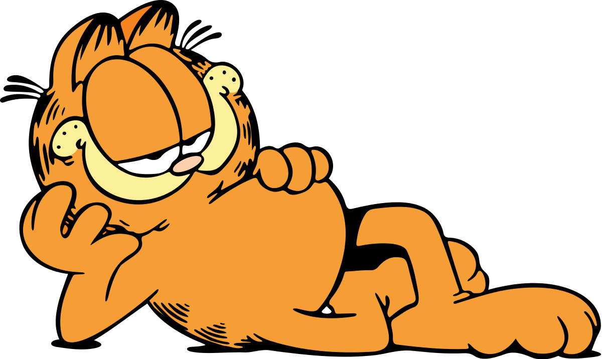
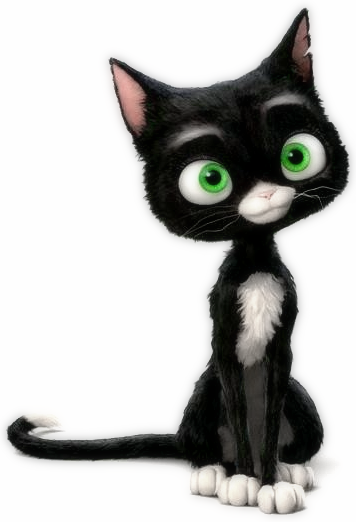
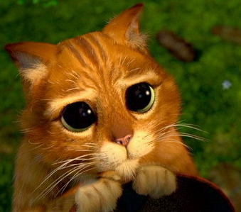

Котенок по имени Гав
100 р.
Пожалуй, самый знаменитый котенок из советских мультфильмов – это котенок с необычным именем Гав. Он смотрит на мир своими большими синими глазами, дружит со щенком и вообще ведет себя странно и не по-кошачьи.
Интернет-магазин добрых котиков

100 р.
Пожалуй, самый знаменитый котенок из советских мультфильмов – это котенок с необычным именем Гав. Он смотрит на мир своими большими синими глазами, дружит со щенком и вообще ведет себя странно и не по-кошачьи.

10 000 р.
Рассудительный и разумный кот Матроскин из мультфильма “Трое из Простоквашино” - настоящий помощник своему хозяину: выполняет работу по дому, ухаживает за больным хозяином, держит корову. А помните его крылатую фразу: "А я еще и пироги печь умею"? От такого питомца никто бы не отказался.

5 000 р.
Фразу "Леопольд, выходи! Выходи, подлый трус!" мы помним с детства. Леопольд – интеллигент и пацифист, старается никому не делать зла. При этом его постоянно доводит парочка нахальных мышей-хулиганов, которые считают доброту Леопольда признаком трусости. Но, как и положено в детском мультике, добро (пусть даже мирное) всегда побеждает зло (даже воинствующее).

1 500 р. 3 000 р.
Маленький котенок хочет спеть людям свою песенку, но все его ругают и прогоняют. Но в конце мультфильма котенок находит нового друга, поет свою песенку и у всех людей вокруг дела сразу налаживаются.

3 000 р.
Котенок Василий живет в Воронеже на улице Лизюкова и постоянно убегает от щенка. Такая жизнь Василию не нравится, и он мечтает превратиться в большого и страшного зверя. Ворона-колдунья превращает котенка в бегемота и отправляет в Африку. Но оказывается, что быть бегемотом тоже непросто, особенно если пытаться по привычке лазить на деревья. Скучая по дому, котенок-бегемот прибивает к пальмам таблички с названием родной улицы. Поэтому его подруга-слониха, оказавшись в Воронеже, удивилась: "Откуда здесь африканские названия?"

50 000 р. 70 000 р.
Бочкообразный рыжий кот из мультфильма “Возвращение блудного попугая” – хоть и не главный, но очень запоминающийся персонаж. Такой мультипликационный Обломов: он живет у богатых хозяев, у него все есть и ему ничего не нужно. "Таити-Таити! Не были мы ни в какой Таити! Нас и здесь неплохо кормят!"

$100
Гарфилд – нахальный и самовлюбленный рыжий кот – родился на страницах комикса, потом заполучил свой мультсериал, а несколько лет назад дорос и до фильма. Он невероятно эгоистичен и ленив, зато проявляет редкую изобретательность, чтобы получить еду. Несмотря на дурной характер кота, хозяин любит его, да и сам Гарфилд способен проявлять добрые чувства. Он чем-то похож на толстого рыжего кота, но он куда более наглый.

$500
Семейство аристократических кошек: кошка Герцогиня и троица ее котят оказываются в сложной ситуации: дворецкий их хозяйки пытается избавиться от животных, чтобы вместо них получить наследство, и увозит их за город. К жизни на улице домашние любимцы оказались не готовы, но семейка познакомилась с уличным котом Томасом О’Мелли, который помогает им вернуться в Париж.

$100 $300
Взлохмаченная бездомная черная кошка по кличке Варежка из диснеевского мультфильма “Вольт” – самостоятельное и хитрое существо. Когда-то у нее был дом и хозяева, но они переехали и оставили кошку на улице. Варежка стала циничной пессимисткой с саркастическим чувством юмора. А как иначе? Нельзя бросать животных!

$350
Кот в сапогах из серии мультфильмов про Шрека. Его любимый прием в драке – посмотреть на противника большими-пребольшими глазами. А когда враги умиляются и бросают оружие, чтобы погладить очаровательное существо, кот кидается в бой. Кот в сапогах появился во втором мультфильме про Шрека как специалист по убийству огров, но неожиданно стал другом зеленого людоеда.